Fresh graduate Manajemen — Pemasaran, Universitas Putra Bangsa.
Terbiasa menganalisis kebutuhan bisnis, merancang strategi komunikasi, dan berkoordinasi lintas tim untuk mendukung pengembangan organisasi maupun promosi usaha.
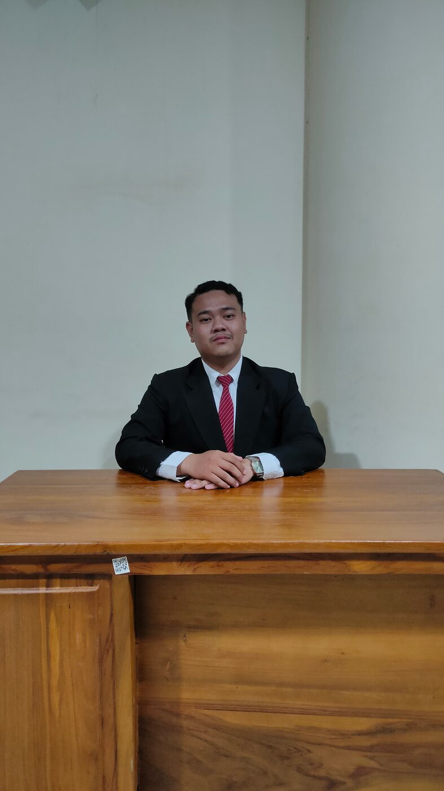
Fondasi manajemen yang dipadukan dengan kepekaan komunikasi dan kreativitas visual.
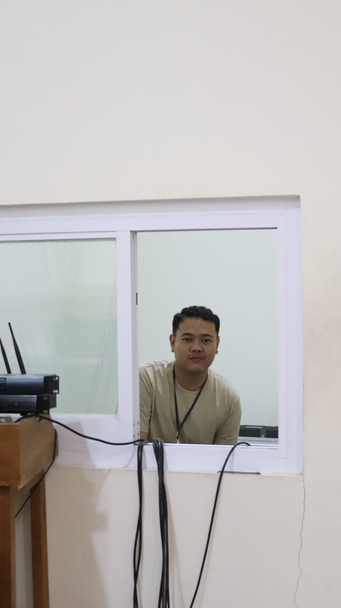
Halo, perkenalkan saya Arif Fatur Rohman — lulusan Fakultas Ekonomi dan Bisnis, Universitas Putra Bangsa, Program Studi Manajemen.
Sebagai fresh graduate yang berorientasi pada detail, saya memiliki fondasi akademik yang kuat dalam menganalisis kebutuhan bisnis, merancang strategi manajemen yang efisien, serta berkoordinasi dengan tim untuk mendukung pengembangan organisasi yang relevan dengan dunia usaha dan industri.
Pengalaman saya membentang dari administrasi perdagangan di instansi pemerintah, kehumasan organisasi kemahasiswaan, hingga mengelola media sosial untuk bisnis lokal — sebuah kombinasi yang membuat saya nyaman bekerja di persimpangan strategi dan eksekusi kreatif.
Dari pelatihan teknis kejuruan menuju konsentrasi manajemen pemasaran di jenjang sarjana.
Menggabungkan pemikiran analitis dengan pendekatan kreatif dalam menyelesaikan permasalahan.
Terbiasa merancang strategi komunikasi, mengelola konten, serta mengembangkan ide-ide yang relevan untuk mendukung kinerja organisasi dan kebutuhan dunia usaha.
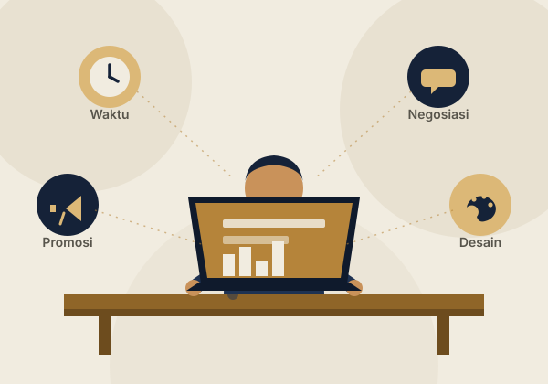
Tiga peran yang membentuk cara saya berkoordinasi, mengelola informasi, dan memimpin tim kecil.
Membantu pengelolaan data dan informasi perdagangan untuk mendukung program pengembangan UMKM. Menyusun laporan kegiatan serta dokumentasi terkait informasi pasar dan produk lokal, dan berkoordinasi dengan berbagai pihak internal guna mendukung kelancaran alur kerja dan pelayanan publik.
Mengelola komunikasi internal dan eksternal UKM Musik, termasuk publikasi kegiatan melalui media sosial. Merancang strategi kehumasan untuk meningkatkan citra organisasi dan partisipasi anggota, serta berkoordinasi dalam pelaksanaan event musik.
Memimpin tim IT dalam persiapan dan pelaksanaan event pentas seni. Mengelola kebutuhan teknis, dokumentasi digital, serta publikasi kegiatan, dan berkoordinasi dengan divisi lain untuk memastikan kelancaran acara.
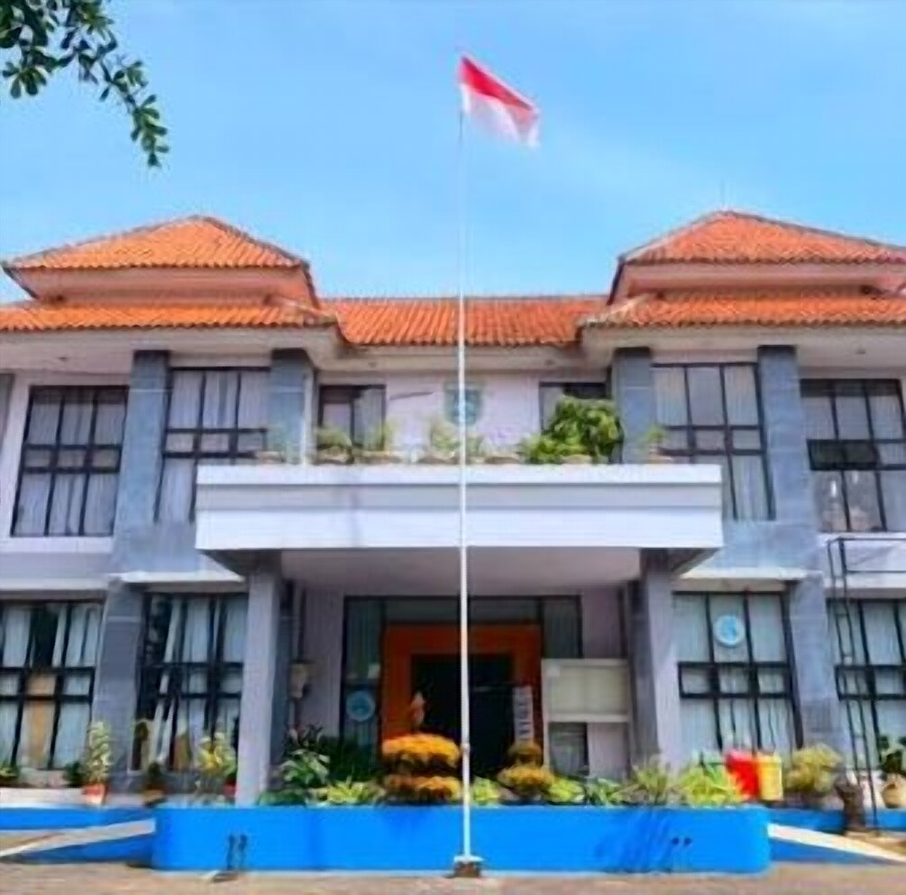
Lima inisiatif nyata, dari pengelolaan media sosial bisnis hingga koordinasi produksi acara.
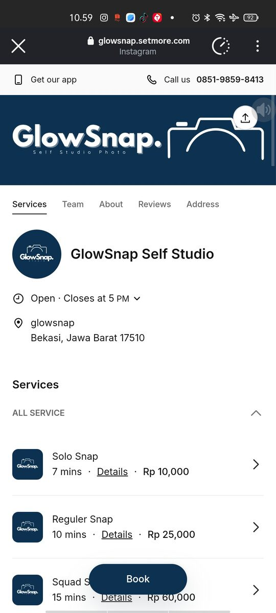
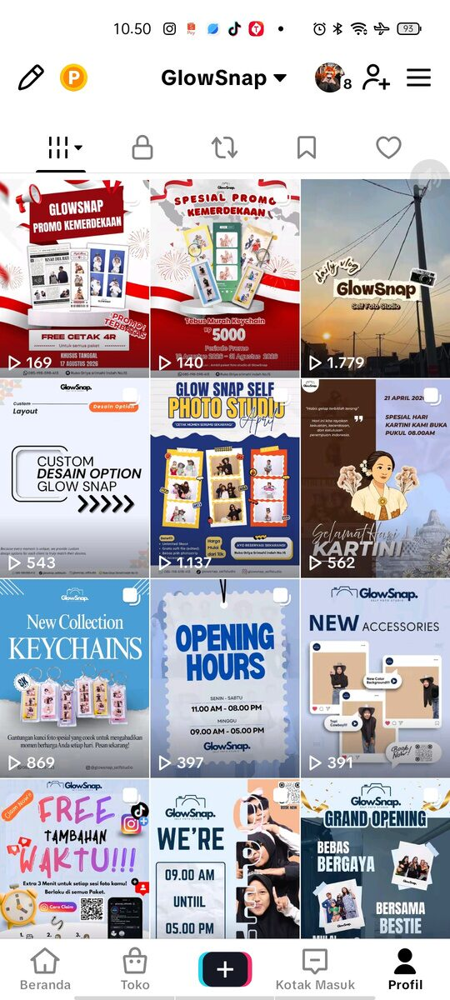
Menjalankan peran Social Media Officer dengan tanggung jawab atas perencanaan konten, pengelolaan akun media sosial, dan analisis performa untuk mendukung promosi jasa studio foto.
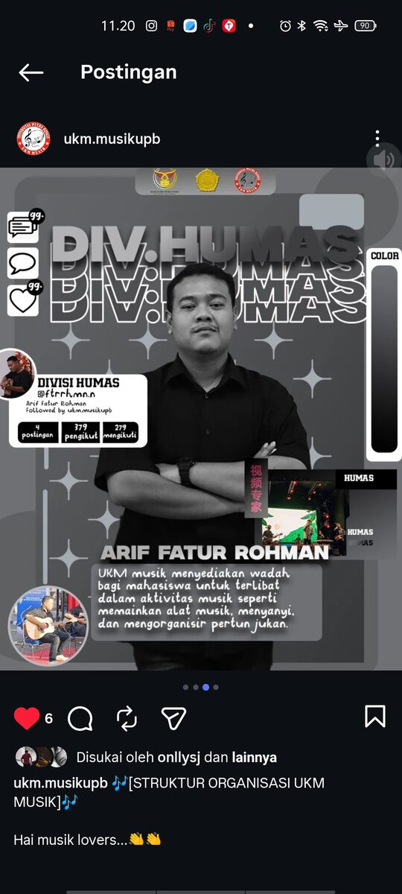
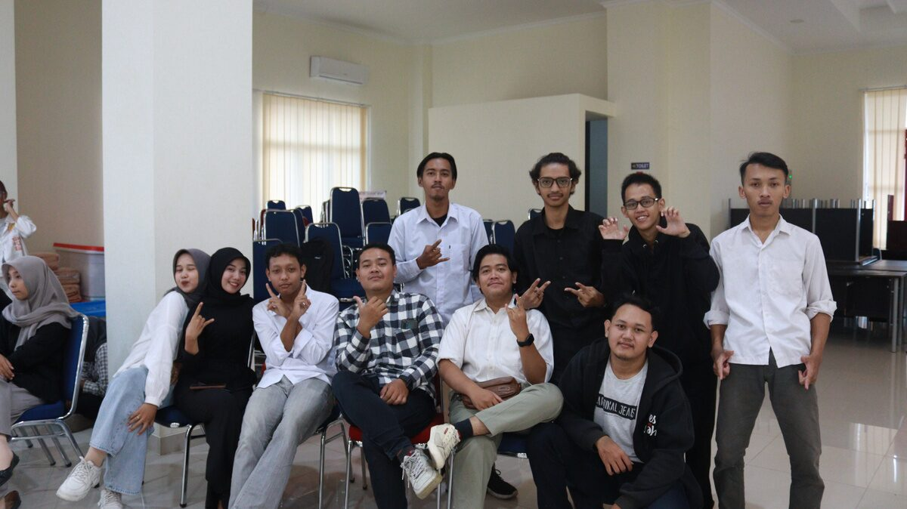
Mengelola komunikasi internal dan eksternal UKM Musik, termasuk publikasi kegiatan melalui media sosial, merancang strategi kehumasan, dan berkoordinasi mendukung pelaksanaan event musik.
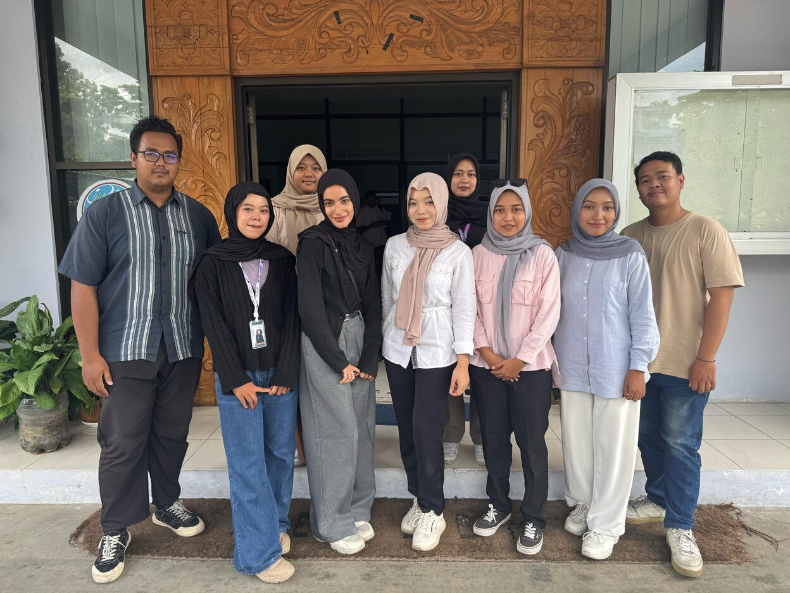
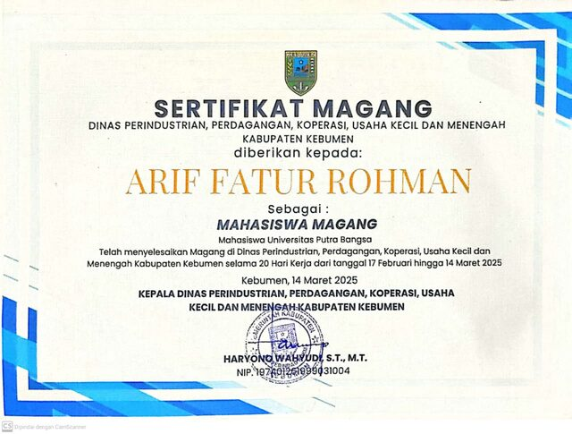
Bertugas di Bidang Pengembangan & Informasi Perdagangan, melakukan koordinasi, survei, monitoring, serta penyusunan laporan harga bahan pokok selama 20 hari kerja.
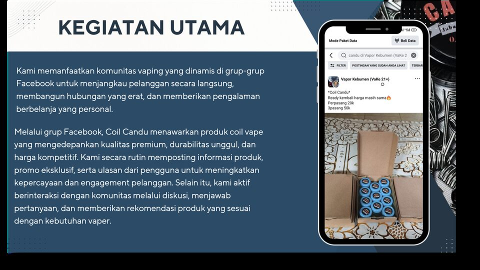
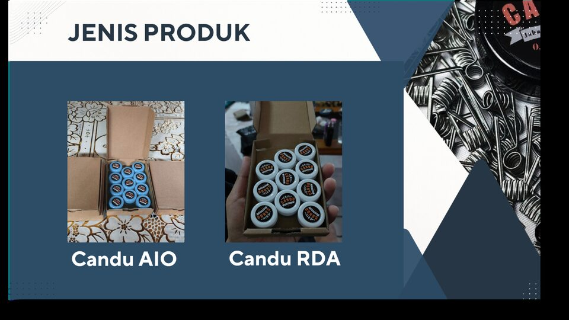
Mengembangkan proyek bisnis reseller coil vape, mulai dari pengadaan barang, pemasaran digital melalui komunitas Facebook, hingga manajemen transaksi dan pelanggan.
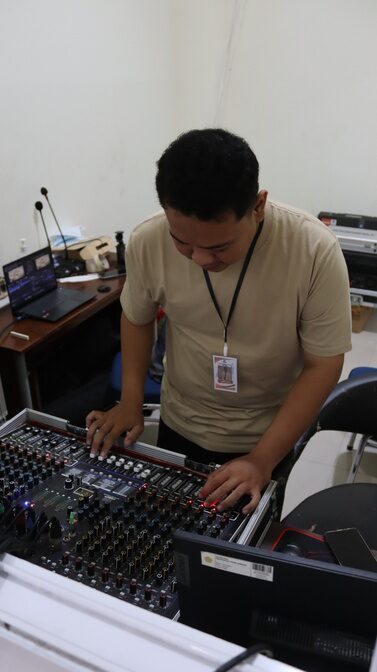
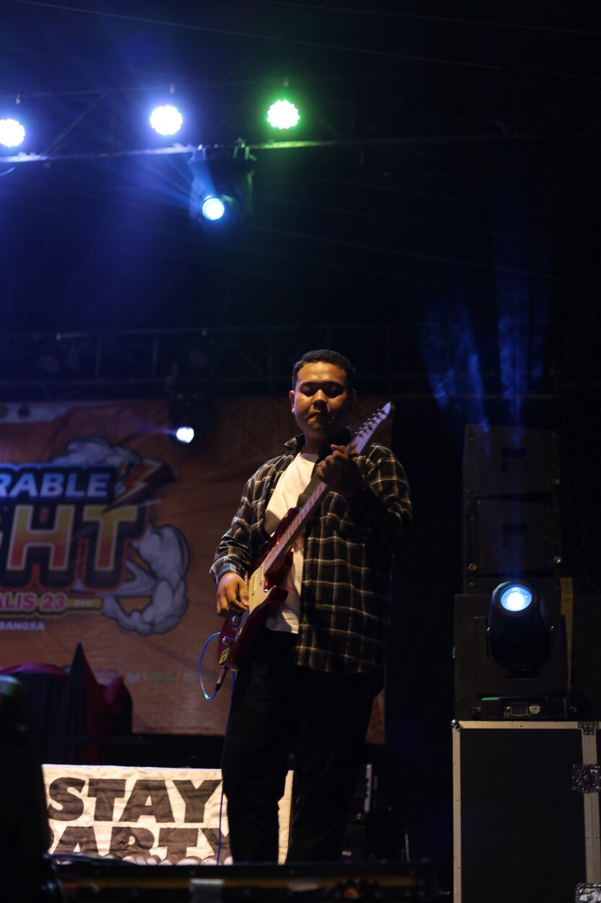
Memimpin tim multimedia pada Pentas Seni Departemen Kesenian, serta tampil sebagai penampil musik pada Malam Puncak Dies Natalis ke-23 Universitas Putra Bangsa di hadapan civitas akademika.
Pindai untuk membuka LinkedIn